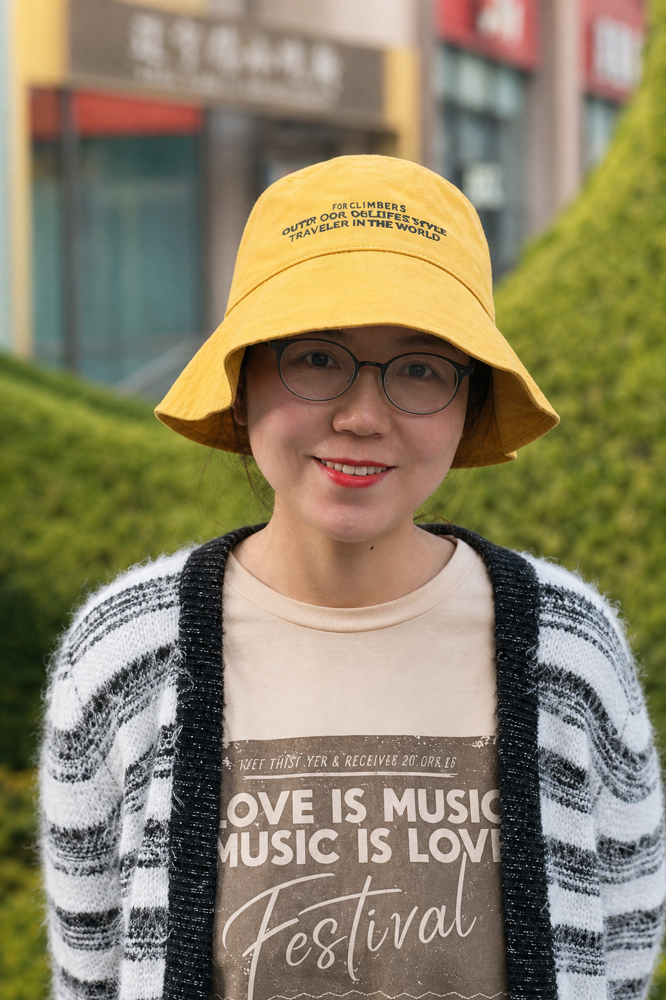

第一完成人
从事工作 / 教学科研、成果主持研究领域 / 中国新闻史
第二完成人
从事工作 / 教学科研 研究领域 / 公共传播、视觉传播研究
第三完成人
从事工作 / 教学科研、广告学系主任研究领域 / 广告学
第四完成人
从事工作 / 教学科研、新闻学系主任 研究领域 / 新闻实务
第五完成人
从事工作 / 教学科研、舆情研究中心主任研究领域 / 新闻实务、融合新闻、网络舆情
第六完成人
从事工作 / 实验教学、示范中心主任 研究领域 / 新闻摄影、新闻实务
第七完成人
从事工作 / 教学科研、新闻学系副主任 研究领域 / 新闻史论、新闻可视化
第八完成人
从事工作 / 教学科研 研究领域 / 数据新闻、媒介技术
第九完成人
从事工作 / 教学科研 研究领域 / 国际传播
第十完成人
从事工作 / 教学科研研究领域 / 广告传播、跨文化传播、新媒体

第十一完成人
从事工作 / 本科教学管理、教学办公室主任 专 长 / 教学组织与质量建设